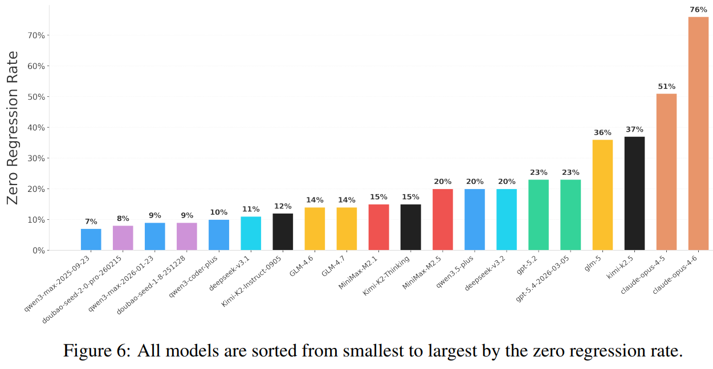

从重复错误里提炼机制
在 My AI Adoption Journey 中，Harness 的朴素定义是：agent 重复犯错时，把修复固化成系统性的预防措施
让 agent 在真实工程里长时间持续做对的执行系统设计
当 agent 开始读仓库、跑命令、改代码、提 PR，瓶颈会从表达质量转向约束、反馈和恢复能力
在 My AI Adoption Journey 中，Harness 的朴素定义是：agent 重复犯错时，把修复固化成系统性的预防措施
OpenAI 的实践 把它推进成 agent-first 产品开发流程：人主要构建 agent 能持续工作的环境
核心变化不是“prompt 写得更长”，而是把对话里的临时修补推进到 repo 内可版本化、可复用、可验证的机制
这种模式下，工程师的关键动作变成设计高容错环境、闭环反馈回路和确定性架构约束
从 ThoughtWorks 的梳理 看，Harness 不是替模型思考，而是把高方差系统压到可控区间里

只有少数模型在 zero regression rate 上超过 50%
SWE-CI 把 agent 放进真实仓库的多轮 CI 演化过程里，评估的是持续改代码、跑测试、避免回归的能力。吞吐上去后，没有 Harness 的代码库很快会累积结构性熵
过去团队变大才暴露的问题，现在会被 agent 吞吐提前放大
Slack 讨论、设计决策、schema 必须沉淀为 repo 内 artifact
知识可见优先把错误归因为环境缺能力，而不是让人手动兜底
能力补齐文档防君子不防 agent，用 lint、CI 和结构约束强制边界
机械执行动态行为要靠截图、日志、trace 和可重复探针来验证
可观察入口文件要薄，细节按需加载，避免巨型手册污染 context
上下文节制追踪文件编辑次数，超过阈值后提示 agent 重新评估当前路径
退出前拦截，强制对照任务规格运行验证，降低过早收尾概率
拉取 LangSmith trace，派生并行分析 agent，再汇总失败模式
无关搜索结果和长日志挤占注意力，应该限制注入量，用过滤测试替代全量噪声
巨型说明书不可验证，入口文件应削薄成目录，细则下沉到模块文档
模型自评有正向偏误，需要独立 evaluator，如强制截图校验或 trace 检查
吞吐提高后熵管理要单独成 lane，用自动化定期扫除无效抽象
LLM 生成的 agentfile 可能稀释真正有用的约束
OpenAI 报告的约 10x 效率提升 是 Harness 成熟后的结果。前期的基础设施开销会压低短期产出，但每个新增工程师都会复用同一套能力边界
单次修改成本高，准入卡点严格，等待阻塞的成本相对可接受
依赖快速 merge、快速发现、快速回滚。局部丑陋可以容忍，过早抽象反而会放大返工
Three similar lines of code is better than a premature abstraction
今天有效的 guardrail，可能只是在绕开当前模型的短板
agent 从历史日志里反思失败模式，提出 hooks、checklist、evaluator 候选，再由人决定是否固化
多 agent 并行后，关键问题会变成任务边界、文件所有权、交接协议和冲突检测
选框架、目录、schema、日志和测试策略时，会同时考虑人是否好维护、agent 是否容易验证
Harness Engineering 不是让 prompt 更长，而是把经验变成 agent 能执行、能看见、能自我修复的工程系统
当模型能力继续上升，真正拉开差距的是组织能否把失败沉淀成闭环